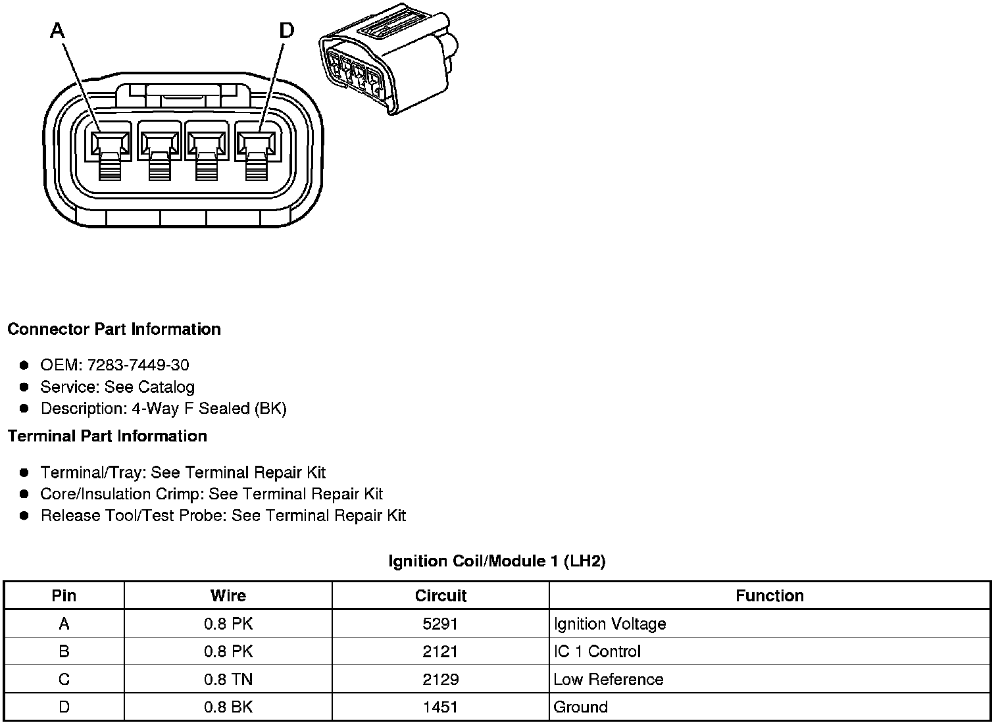
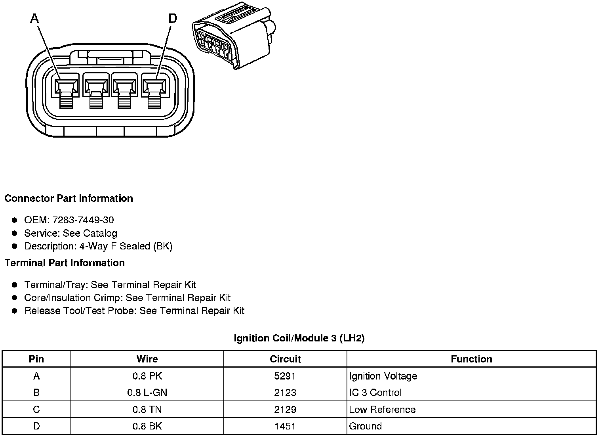
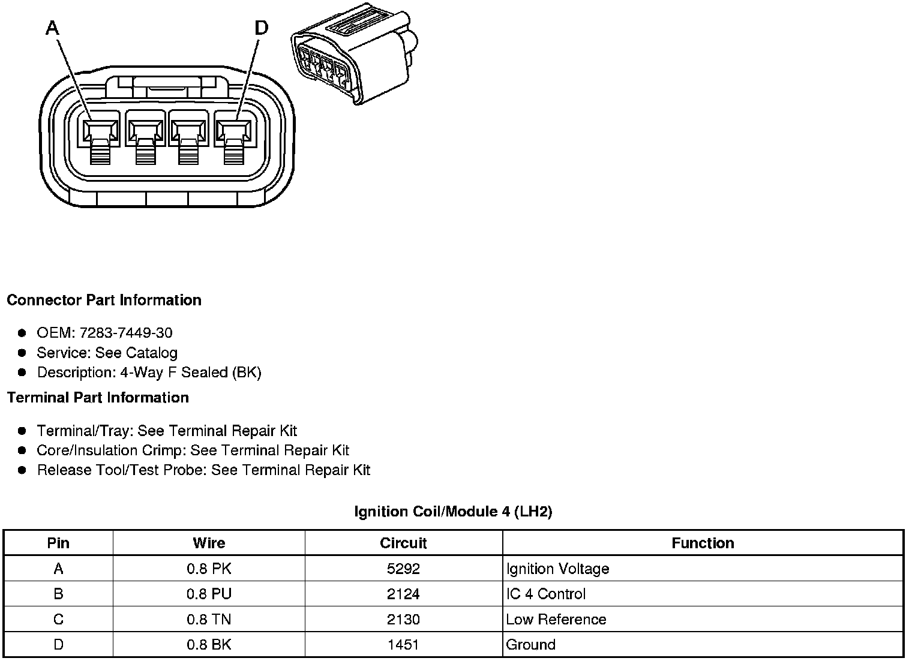
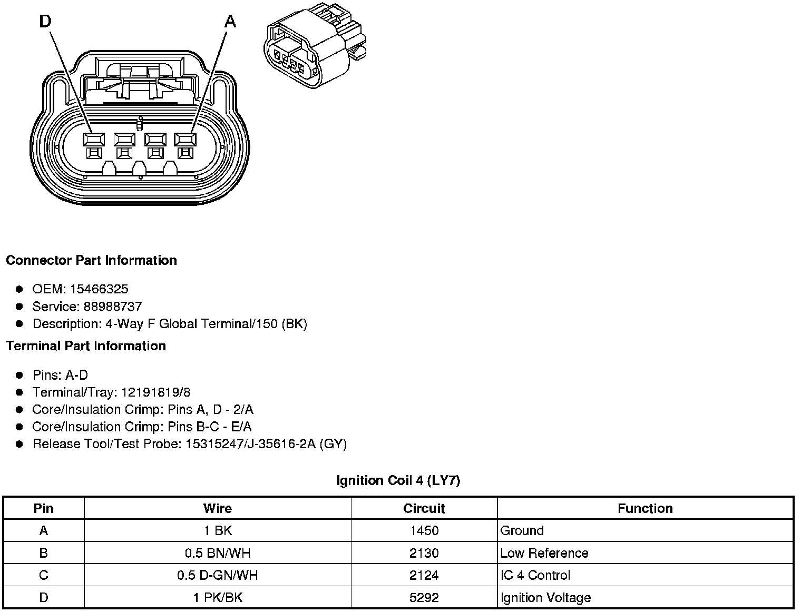
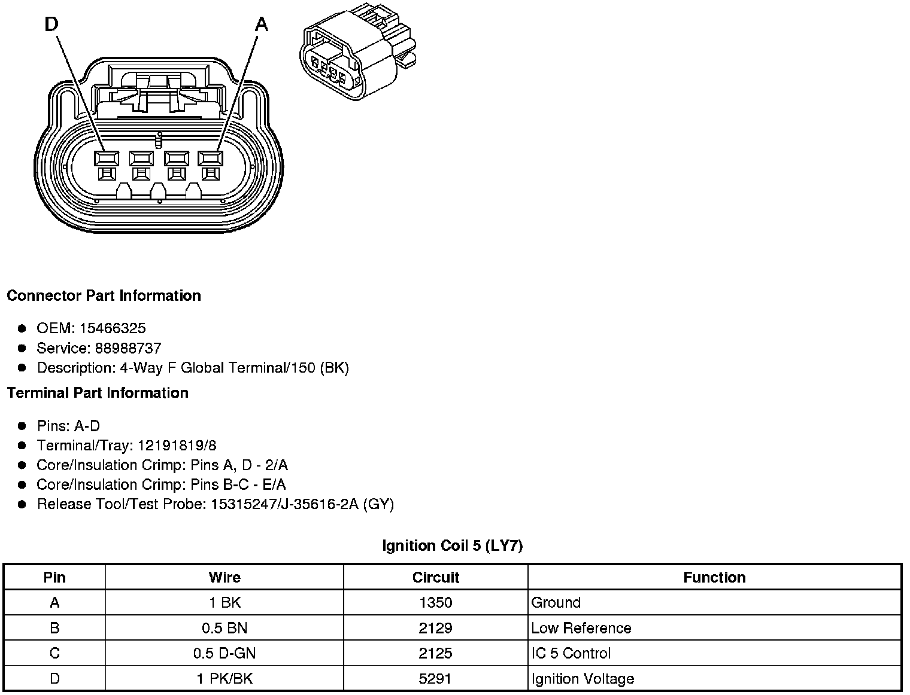

Ignition Coil: Diagrams
Component Connector End Views
Ignition Coil/Module 1 (LH2 - Gas, 8 Cylinder, 4.6L, SFI, V8, DOHC, HO)

Ignition Coil 1 (LY7 - Gas, 6 Cylinder, 3.6L, SFI, V6)
Ignition Coil/Module 2 (LH2 - Gas, 8 Cylinder, 4.6L, SFI, V8, DOHC, HO)
Ignition Coil 2 (LY7 - Gas, 6 Cylinder, 3.6L, SFI, V6)
Ignition Coil/Module 3 (LH2 - Gas, 8 Cylinder, 4.6L, SFI, V8, DOHC, HO)

Ignition Coil 3 (LY7 - Gas, 6 Cylinder, 3.6L, SFI, V6)
Ignition Coil/Module 4 (LH2 - Gas, 8 Cylinder, 4.6L, SFI, V8, DOHC, HO)

Ignition Coil 4 (LY7 - Gas, 6 Cylinder, 3.6L, SFI, V6)

Ignition Coil/Module 5 (LH2 - Gas, 8 Cylinder, 4.6L, SFI, V8, DOHC, HO)
Ignition Coil 5 - (LY7 - Gas, 6 Cylinder, 3.6L, SFI, V6)

Ignition Coil/Module 6 (LH2 - Gas, 8 Cylinder, 4.6L, SFI, V8, DOHC, HO)
Ignition Coil 6 (LY7 - Gas, 6 Cylinder, 3.6L, SFI, V6)
Ignition Coil/Module 7 (LH2 - Gas, 8 Cylinder, 4.6L, SFI, V8, DOHC, HO)
Ignition Coil/Module 8 (LH2 - Gas, 8 Cylinder, 4.6L, SFI, V8, DOHC, HO)